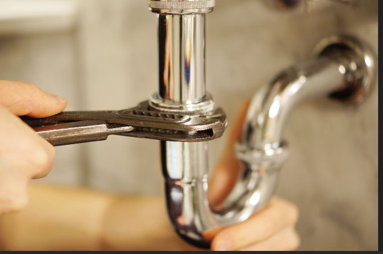

Clogs can occur in toilet bowls, kitchen and bathroom sinks. To unclog a drain, start by removing visible debris from the sink or tub opening. Pour hot water down the drain to loosen buildup. Use a plunger to create suction and dislodge blockages. For stubborn clogs, apply baking soda followed by vinegar; let it fizz, then flush with hot water. Avoid overusing chemical cleaners—they may damage pipes. Always wear gloves and protect your eyes. Open U trap as shown in the iStockphoto.com image and clear it with a snake drain tool.
